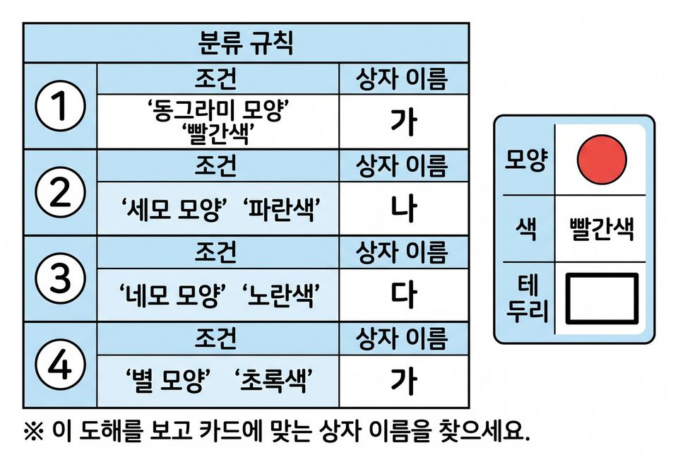
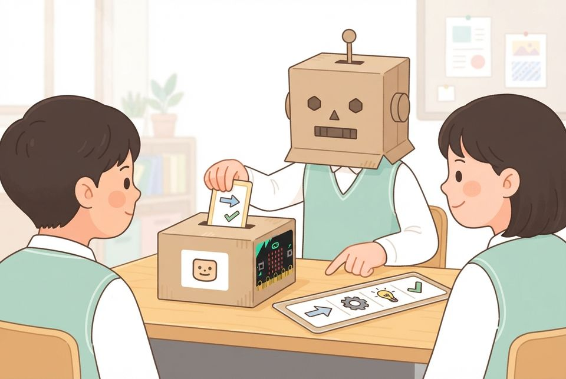
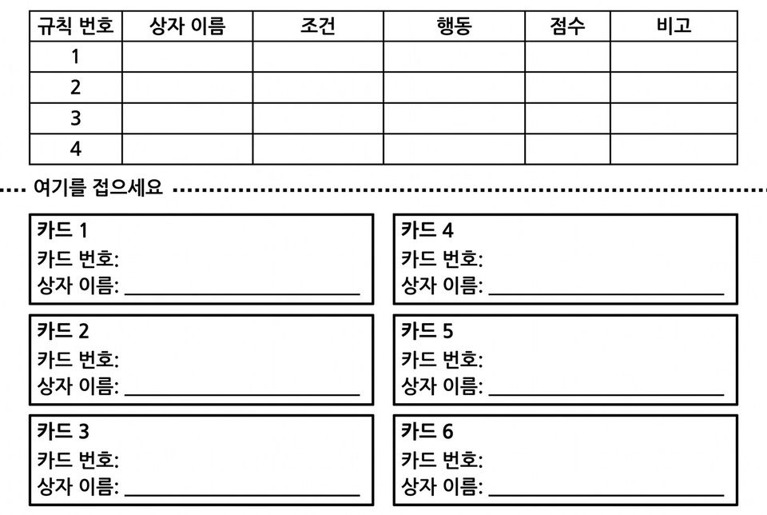

규칙 로봇이 되어 규칙표대로 카드를 판정하고 나만의 규칙표 만들기
학습 문제 — 규칙 로봇이 되어 규칙표대로 카드를 판정하고, 규칙의 순서가 결과를 어떻게 바꾸는지 확인해 봅시다.
개요
| 성취기준 | [6실인공지능03-01] 사람의 판단 지식을 규칙으로 옮기는 놀이와 프로그램 만들기로 규칙 기반 인공지능의 판단 과정을 체험한다. 연계 성취기준: [6실05-05] |
|---|---|
| 핵심 역량 | 지식정보처리 역량, 창의적 사고 역량 |
| 핵심 기능 | ① 인공지능이 만들어지는 과정 탐색하기 ② 규칙표를 위에서부터 차례로 적용하기 ③ 규칙의 순서에 따른 결과 차이 비교하기 ④ 규칙이 다루지 못하는 경우 찾아 기록하기 ⑤ 짝이 그대로 적용할 수 있는 나만의 규칙표 만들고 고치기 |
| 가치 태도 | 인공지능이 사회에 미치는 영향을 파악하는 자세 판단의 규칙을 누가 정했는지 따져 보려는 자세 |
교수학습 활동
11차시 도입 동기 유발 · 학습문제 제시11차시 전개 활동1. 카드와 규칙표 익히기 · 활동2. 규칙 로봇 분류 공장12차시 전개 활동3. 규칙 구멍 찾기 · 활동4. 규칙표 전달 게임12차시 정리 배운 내용 정리 및 의뢰 해결 보고 · 다음 의뢰 예고
11차시도입8분
동기 유발
- 우산을 가져갈지 정할 때 무엇을 보는지 말하기
- 그 기준을 다른 사람이 따라 할 수 있게 한 문장으로 적기
- 사람마다 적은 기준이 어떻게 다른지 견주어 보기
- 학생자치회의 의뢰 듣기: 도우미에 넣을 규칙표가 잘 작동하는지 미리 시험하기
- 오늘 미션: 규칙을 시험하는 규칙 로봇 되기

학습문제 제시
- 규칙 로봇이 되어 규칙표대로 카드를 판정하고, 규칙의 순서가 결과를 어떻게 바꾸는지 확인해 봅시다.
준비물필기구
자료카드 판정 활동지, [도입] 상황 그림
유의점규칙 기반 6차시(11~16차시) 중 이 시간은 규칙표 적용과 규칙 순서까지 다룬다.
유의점기준을 말로만 두지 말고 짧은 문장으로 적게 한다.
유의점활동지 배부 시간을 도입 시간에 포함한다.
11차시전개32분
활동1. 카드와 규칙표 익히기 (10분)
- 카드 한 장이 모양·색·테두리로 정해짐을 확인하기
- 카드 열여덟 장의 모양·색·테두리 칸 채우기
- 규칙표를 위에서부터 읽고 처음 맞는 규칙만 적용하기
- 네 줄 어디에도 맞지 않으면 ‘규칙 없음’이라고 적기
- 교사가 로봇이 되어 카드 세 장을 소리 내어 판정하는 시범 보기

활동2. 규칙 로봇 분류 공장 (22분)
- 재료 창고의 상자나 종이컵 세 개에 상자 이름을 붙여 분류 공장 차리기
- 모둠에서 로봇·카드 넣는 사람·검사관 역할 나누기
- 로봇은 규칙 번호를 소리 내어 읽으며 카드를 상자에 넣기
- 검사관은 카드마다 상자 이름과 적용한 규칙 번호 확인하기
- 열여덟 장을 마치면 각자 기록표에 상자 이름과 규칙 번호 적기
- 규칙 첫 줄과 둘째 줄의 자리를 바꾸고 역할도 바꾸기
- 테두리가 있는 카드 아홉 장만 다시 판정하기
- 결과가 달라진 카드 번호와 그 카드의 공통점 적기

준비물필기구, 종이컵 세 개와 이름표, 로봇 탈(선택)
자료카드 판정 활동지, 모양 카드 열여덟 장, 규칙표 안내
유의점위에서부터 처음 맞는 규칙 하나만 적용한다는 점을 먼저 합의한다.
유의점역할을 나누어도 기록표는 각자 채우게 한다.
유의점판정이 갈리면 어느 규칙을 먼저 보았는지 확인하게 한다.
유의점느린 학습자에게는 규칙 줄마다 예·아니요를 짚는 도움 카드를 준다.
유의점분류 공장은 2분 안에 차리고 꾸미기는 하지 않는다.
12차시전개33분
활동3. 규칙 구멍 찾기 (14분)
- ‘규칙 없음’으로 적은 카드 세 장의 번호 적기
- 그 카드가 네 줄 어디에도 걸리지 않은 까닭 말하기
- 규칙을 한 줄 더 적을지 사람이 다시 볼지 각자 정하기
- 고른 방법과 그 까닭을 한 문장으로 쓰기
- 새 규칙을 맨 위와 맨 아래에 각각 넣어 결과 견주기
활동4. 규칙표 전달 게임 (19분)
- 모양·색·테두리만 써서 규칙 서너 줄 적기
- 정해 준 카드 여섯 장이 갈 상자를 미리 적고 그 칸을 접어 가리기
- 짝과 활동지를 바꾸어 규칙표 글만 보고 여섯 장 판정해 적어 주기
- 접은 칸을 펴서 결과가 같은 카드 수 세기(여섯 장 모두 같으면 규칙 완성 도장)
- 다르게 나온 카드의 규칙 줄을 찾아 고치고 고친 문장 적기
- 도전: 짝이 헷갈릴 함정 카드 한 장을 골라 규칙 한 줄로 막아 보기

준비물필기구, 규칙 완성 도장
자료규칙 만들기 활동지, 규칙표 만들기 칸
유의점규칙을 늘리는 쪽과 사람이 다시 보는 쪽 가운데 어느 하나를 정답으로 제시하지 않는다.
유의점짝에게 넘길 때 말로 설명하지 않고 규칙표 글만 보고 판정하게 한다.
유의점짝의 판정 결과로 개인 성취를 대신 판단하지 않는다.
유의점빨리 끝낸 학생은 규칙을 두 줄로 줄여도 같은 결과가 나오는지 도전하게 한다.
12차시정리7분
배운 내용 정리 및 의뢰 해결 보고 (5분)
- 도장을 받은 규칙표 두세 개를 실물 화상기로 함께 보기
- 오늘 카드를 판정한 규칙을 누가 만들었는지 말하기
- 판별 기준에 비추어 규칙표 도우미와 자동문이 인공지능인지 견주어 쓰기
- 학생자치회에 보낼 보고: 규칙 구멍 하나와 막는 방법 한 줄 쓰기
다음 의뢰 예고 (2분)
- 병설유치원 선생님의 의뢰 알기: 동생들과 할 스무고개 게임판 만들기
- 예시 자료에서 규칙을 찾아내는 방식은 뒤에 배운다는 것 알기
- 활동지 두 장 제출하기
자료규칙 만들기 활동지, 실물 화상기
유의점이 시간의 규칙은 사람이 모두 적어 준 것임을 한 문장으로 정리한다.
유의점판별 기준으로 보면 자동문·타이머는 정해진 동작만 되풀이하고, 사람이 판단하던 일을 규칙으로 대신하는 도우미는 규칙 기반 인공지능이 될 수 있음을 짚는다.
유의점AI 판별 기준: 사람이 판단하던 일(가르기·알아보기·안내하기 등)을 사람의 지식을 규칙으로 옮기거나 데이터로 배워 대신하면 인공지능, 정해진 동작만 되풀이하면 인공지능이 아니다.
유의점쓰기가 어려운 학생은 말로 확인하고 도운 사실을 적는다.
유의점경계 해설: 기준값 하나로 정해진 반응만 되풀이하면 인공지능이 아니고, 사람이 여러 조건을 따져 내리던 판단을 규칙으로 옮기면 규칙 기반 인공지능이다.
평가 계획
인공지능 소양 · 규칙에 따른 판단 과정과 규칙의 한계
규칙표를 순서대로 적용해 카드를 판정하고, 규칙의 순서와 빠진 규칙이 결과에 미치는 영향을 설명하며, 짝이 따를 수 있는 규칙표를 만들 수 있는가?
| 수준 | 평가 기준 |
|---|---|
| 매우 잘함 | 카드 열여덟 장의 판정과 적용한 규칙 번호를 함께 적고, 순서를 바꾼 뒤 달라진 카드와 그 공통점을 설명한다. 규칙이 다루지 못한 카드의 처리 방법을 까닭과 함께 제안하고, 짝이 판정한 결과와 대조해 다르게 나온 규칙 줄을 찾아 자기 규칙표를 고친다. |
| 잘함 | 카드 열여덟 장을 규칙 순서대로 판정하고 달라진 카드를 찾아 적으며, 규칙이 다루지 못한 카드의 처리 방법을 까닭과 함께 제안하고 자기 규칙표에서 고칠 점을 적는다. |
| 보통 | 판정은 하나 적용한 규칙 번호나 일부 칸이 빠지고, 짝의 판정과 다르게 나온 까닭을 규칙 문장과 잇지 못한다. |
| 노력요함 | 교사가 규칙표를 한 줄씩 읽어 주고 적용 순서를 짚어 준 뒤에도 판정 기준을 정하거나 결과를 기록하는 데 어려움이 있다. |
| 미관찰 | 결석이나 미제출로 확인하지 못한 경우. 낮은 성취로 적지 않고 따로 기록한 뒤 보충 확인 시점을 정한다. |
평가 방법 활동지 분석 · 산출물(규칙표) 분석 · 구술 확인 · 관찰
연동 도구·링크
과정안에 나오는 도구가 저절로 걸립니다. 수업 전에 학교망에서 열리는지, 블록·메뉴 이름이 바뀌지 않았는지 확인하세요.
이 차시는 외부 도구 없이 종이·실물로 운영합니다.
내 수업 링크
학급 패들렛, 엔트리 작품, 활동지 주소처럼 이 차시에 쓸 링크를 걸어 둡니다. 이 브라우저에만 저장되고 밖으로 보내지 않습니다. 학생 이름이 든 주소는 넣지 마세요.